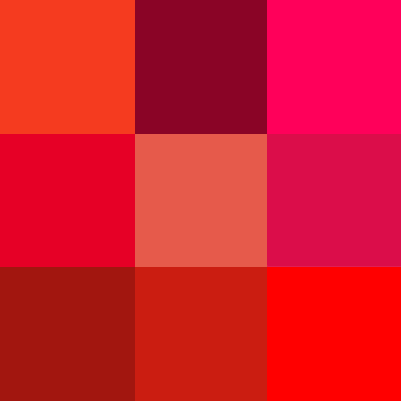
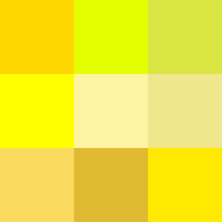

Aquí se colocan las diferentes etiquetas que definen la estructura jerárquica del documento, y que son visibles.
Este párrafo está resaltado con la clase .destacado.
Otro texto con un span destacado dentro del párrafo.
|
 Ir a la Wikipedia |
 Ir a la Wikipedia |
Ir a la Wikipedia |